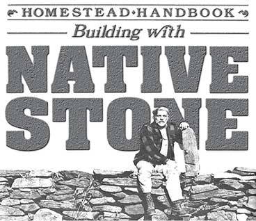
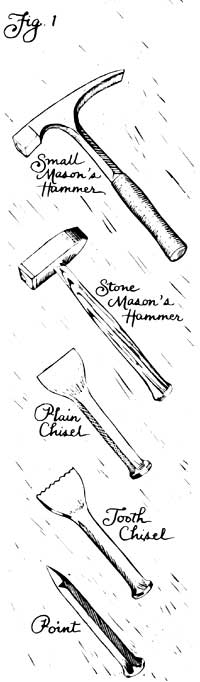
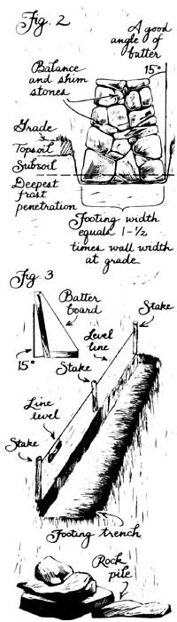
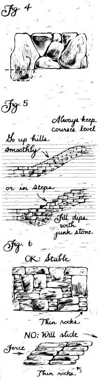
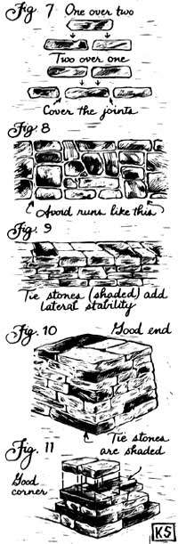

My introduction to stonework, like beginnings in so many homesteading skills, came unexpectedly, urgently, and at the wrong time. It was a rare clear morning during a rainy spring in the late 60's, and I was leaving for work from the once-derelict farm in upper Bucks County, Pennsylvania that provided my weekend refuge from a city job. The buildings on the place were 150-plus years old and had yard-thick stone walls. The house was stuccoed on the outside and was in fair shape, but the barn had been badly neglected. Its leaky roof rested on ten-foot-high walls that were originally constructed as a sandwich: vertical rock faces of rounded fieldstone on the outside with a mud-mortar/rubble stone mix on the inside. Most of the "pointing" (mortar troweled into the cracks between rocks to retard weathering out of the interior) was long gone. Winter rain or snow meltwater had run in, frozen, and gradually worked that mortar out, and the interior mud packing had gradually followed suit, until-in places-you could see clear through the walls. Still, the rock itself had been laid up well enough to stand through generations of rain and storm.
Till that day, that is. On walking to the car, I found that the thunderstorms that had kept me awake half the night had also washed out the southwest corner of the barn, along with half of each adjoining wall. Now, the roof was kind of fluttering in the wind . . . ready to follow the south wall downhill.
I hastily shored up the roof with old framing timbers, traded my Brooks Brothers/Florsheim city uniform for honest Sears/Endicott Johnson, and ordered up a few days' vacation from work. Then, when the Yellow Pages failed to produce any stonemasons at all (and the only general masonry contractor who'd talk to me recommended that we tear the walls down and let him put up a building-code-acceptable concrete-block foundation), I set about teaching myself stonemasonry the only way I could, by studying the barn foundation itself: walls that had been built shortly after the American Revolution by dirt farmers with no architecture degrees, no building codes, no engines to ease the strain-just common sense and hands-on experience, simple ramps, levers and pulleys, a team of draft animals to pull the stone boat, and strong backs unafraid of work.
My slow-learner's repair job took the better part of a week, and most sections were built and torn down and rebuilt several times before I got them half right. But I can honestly say that the sense of satisfaction I felt on finally completing that barn wall did more than any other single experience to move me out of the urban rat race and into a life of selfdependence on the land.
First Lessons
I 'd suggest that what I did for lack of any alternative-study an existing wall and copy it-is the best way for folks to learn stone building on their own hook. Granted, as with most anything, a master of the trade can teach you faster (some would say better ), and I've learned a lot from proper masons. However, stone building is a highly individual skill, so once you have the basics down, you simply have to put in time working with the stone to develop your own style.
You see, no two builders will turn the same wall out of the same pile of rock. A mortared brick wall-all plumb and square and lovely-is a work of craftsmanship, to be sure. But it's a solid chunk of ceramic, assembled from identical component parts, and constructed pretty much like any other. A stone wall, on the other hand, is a combination of learned craft and an individual's intuitive response to a complex three-dimensional puzzle having an infinite number and variety of solutions. A stone wall is a work of art in the truest sense, my friend, a creation of order out of chaos, of beauty from dross-as much an improvement on nature as may be accomplished by the hand of man.
And damn, but it is satisfying! A hard-won satisfaction, to be sure; rock weighs a lot, goes up hard, and comes down harder. First of all, then, let's talk about how to keep that stone from denting you up too much as it moves in either direction.
Forewarned
G et yourself a pair of horsehide gloves, a well-fitting pair of hard-toed, hightopped boots, and stout, long-legged trousers. Rock is abrasive and heavy, and building walls with it is a totally engrossing task that tempts you to forget safety. With proper outer wear, you can avoid the scratches and dents-and ignore the occasional rolling stone-that otherwise can mess up both your hide and your concentration. Instep and toes are the body parts most at hazard, so proper boots are particularly important: They let you put a foot anywhere that best leverage demands without worrying about getting laid up.
Probably your most valuable piece of equipment is a healthy back. Know the old adage "Lift with your legs, not your back"? Well, you can just about forget it in wall building. Instead, don't lift any rock at all that's bigger than you can heft easily sitting down. Roll it, slip it, slide it, or flip it over end to end. Use ramps or levers or sleds. And when you must use brute force, get behind and push with your legs: Bending double at the waist and heaving up on a heavy rock is an invitation to a month of forced bed rest.
Oh, yes: Start off easy. Anyone in average good health can work rock. But you'll probably be employing muscles that haven't been used much before. So go slow at first, particularly if (like me) you find the urge to raise stone walls comes on at the first warm spring day following a muscle-softening winter. Chances are, your rock has rested where you first found it for upwards of 20,000 years minimum and is in no hurry to move. Don't rush it. The stones won't mind, and your back might.
Helpful, but not essential, are a set of rock-working tools like those shown in Fig. 1. You can find the common-and most useful-heavy mallets and brickmason's chisels at any country hardware store, or in mail-order or wholesale catalogs under "Trowel Trades" or "Mason's Supplies". Locating the big pry, star drills, railroad spikes, and other tools you'd need for any do-it-yourself quarrying may take a little searching. I'm told there are pointed quarrier's sledges and such niceties as wedge-and-shim splitting tools available, too, but I've never used them. If you really want to get into shaping stone, visit your local burial-monument works for advice and tool sources. And be sure to wear a long-sleeved shirt and use safety goggles during any hammer-and-chisel work. Rock chips can be sharper than a surgical scalpel, and they fly of the work at considerable speed.
Reading the Rock
Most of what I've read about stone building presumes a good supply of table rock (soft sedimentary rock such as shale, sandstone, or perhaps a nice smooth-grained limestone that was originally laid down as sheets of alluvial silt, sand, or tiny seashells at the bottom of ancient seas). Many such pieces retain their granular structure and multilayered sedimentation pattern and can consequently be easily worked into shape. (Some can be split up as even and square as brick with little more than a hand ax!) If you are so fortunate as to have access to good-building sedimentary stone, God bless.
On my own Berkshire mountain plateau, there's a mix of the other two-less malleable-major rock types: igneous and metamorphic. Interspersed all too liberally through the garden loam are fieldstones . . . called cobbles or hardheads by local folk and glacial erratics by geologists. The more or less round hunks of igneous rock were formed of minerals that melted deep in the earth's innards, cooled to become crystalline rock such as granite or feldspar, and in time broke off and rolled down to us under the Pleistocene glaciers. Where bedrock pokes out of our pasture as ledge, there's a soft and greasy, easy-splitting mica schist-a metamorphic rock. Marble and slate are more familiar varieties of metamorphic stone. All are sedimentary (or other) rocks that were heated sufficiently by underground pressure to fuse, but not enough to cause a full meltdown and reformation as igneous.
Unless you can afford to have flat rock hauled in from the nearest quarried outcropping (in which case you can doubtless afford your own mason to go with it!), you, like me, will be building with what you have at hand. And, unless you have a lot of time and patience-or a pneumatic hammer and chisel to work stones into shape-you'll probably be using your native stone pretty much as you find it.
Where's that, you ask? Unfortunately for my garden, I've never had to search out stone myself. Rocks "grow" out of our New England soil as glacial erratics are pushed skyward each year by heaving frost. If you are not so blessed, look along creeks or riverbeds, where roads cut through rolling country, or wherever heavy construction is going on. Rock often crops up where someone doesn't want it and is consequently free for the taking. Even if you have to buy local stone, it is cheap. The loading and hauling is what'll really cost you.
Don't bother to try building a wall out of gravel or even a pile of fist-sized cobblestones. A lot of little rocks would give the wall so much travel that it would fall apart in short order. You want rocks that are a good double handful and larger . . . the bigger the better. (Some parts of the country offer great slabs of stone that need busting up and will give you a chance to learn what "hard labor" really means.)
To some degree, the kind and shape of your available rock will dictate the internal dimensions of your wall. It needn't decide what you build, however. There are cross-country walls in China and in Great Britain, pyramids in Mexico and in Egypt, and monuments and temples all over, each of "dressed"-squared and trued-stone of all varieties, laid by hand hundreds or thousands of years ago and still standing. Within an hour's drive of my own place are buildings and foundations of big stone, small stone, round stone, and flat stone. I know several local fences so well made, though of potentially unstable-almost globular-fieldstone, that they have lasted with no maintenance for 200 years.
The true limiting factors in wall construction are your own time and patience, your skill and confidence, the nature of the structure you are building, and-one more thing-whatever the local building code has to say about all that. Some places, the zoning mavens will be on you if you try to build a foot-high stone fence along your own garden path. If that happens to you, I'd suggest getting a permit to build a privacy screen; then do your work behind that. (Take the screen down after the next election, and no one will give a hoot.)
If there's enough rock in the neighborhood to erect a building, earlier generations will most likely have built with it. In that case, use the "grandfather clause" in your local zoning ordinance and building code that exempts old structures from new regs and simply rebuild on an existing building site or foundation. I've re-piled some dandy old stone buildings into shapes and sizes that the original architect couldn't have imagined . . . and I'm now halfway through building a foundation for a satellite dish antenna (!) onto the cellar hole of an eighteenth century root cellar on my place, no permit applied for or needed. Next year, my ten-year-old daughter Martha and I are planning to begin work on an old-style post-and-beam, mortise-and-tenon, pegged-and-slated barn on another "ancient" stone foundation: one I hadn't finished laying before first snow last fall. (Carved the date, 1787, on the cornerstone myself!)
Preparations for Building
W e come at last to hands-on construction and to the one elemental truth of stone building. Adam Smith and Karl Marx would cringe in unison at the suggestion, but the main ingredient in a stone wall is neither the rock nor your own hard work. It's gravity. Arrange your stones in such a way that gravity keeps pulling straight down on them, and the wall will be standing long after you and I no longer can.
First, you'll need a proper foundation. The more permanent you want your wall, the more of it you must bury forever underground. The base of any wall expected to last a few hundred years must rest on bedrock if possible, otherwise on solid subsoil. So get yourself a cutting spade to slice out sod and a long-handled shovel to dig a trench. You will find that any ground cover cuts best in early spring before its root systems grab hold; in any season, it cuts easier when wet. Get out the sod and topsoil, and haul it to the compost pile. Then remove any loose rocks and cut out all roots. You may want to remove nearby trees as well. If they're left Standing, their roots will-in time-grow back and heave any wall made, so long as there is soil on the other side for the roots to grow into. (Roots don't much bother walls around cellar holes-there's nothing beyond to grow into.)
If you live in the Snow Belt and want the wall to be a permanent monument to the time and labor you put into it, you should dig the foundation to below frost line. If you plan your walls as part of a building, particularly one that will house people or livestock, you must dig the foundation trench that deep. Simply put, winter temperatures freeze soil moisture, which expands and pushes everything above it up (such as those boulders that grow in my garden each winter). Then when soil warms in spring, the water thaws and shrinks, and the wet earth sags away from solid objects. A dry stone fence-which has more flex than one secured with mortar-absorbs the up-and-down and interior motion such alternate freeze/thaw imparts each season. Even one laid without much foundation will retain its integrity for years with only an annual patrol to replace fallen top stones. On the other hand, a foundationless cemented wall will crack open the second winter. You don't want either cracks or falls with a house, barn, or shed . . . so put any building on a deep foundation.
Dimensions
T he more width you build into your wall per unit of height, the bigger its footprint, and the more stable it will be. So dig your trench a good bit wider than the base of the wall and make it as deep as you can manage. I plan the footing base of my own walls to be about one and a half times their width at ground level, with a gradual upward slope from base to grade (the bottom of the trench to the top). I try to build each face sloping inward at about a 15-degree angle, called batter, from base to top (see Fig. 2).
The batter lets gravity pull the wall in on itself as well as straight down on each individual stone. No wall builder sticks to a single, strict height-to-width ratio, of course, and often as not, the availability of rock and the use to be made of the wall will determine your dimensions. Few rocks, and the need for a high screen, make for a thin, well-thought-out wall; lots of rock, and no need at all, produce nothing but a rock pile. Most of the massive New England stone walls that surround our place were raised mainly as somewhere orderly to stash an oversupply of glacial erratics-which were jutting out of the hayfield, just waiting to chip a scythe blade at mowing time-so they're good and wide. They also defined property lines. Many real estate deeds contain such language as ". . . 20-1/3 chains running 67.5 degrees along a stone wall from a large Chestnut, thence 62 feet to a blighted Elm, thence 115 yards 57.3 degrees along a loose stone fence . . .", and so forth. Today, only the stone walls remain, sad to say.
Laying Out
N ext, find a length of twine and some stakes, and lay out your wall. Be sure to line the stakes straight and don't skimp on them. Too few stakes and a high wind can bow out your string, and you'll end up with an unwanted curve in your wall (see Fig. 3).
If you plan a wall more than a few feet high, you may want to make genuine batter boards, lengths of lumber fixed to a ground-level board at the desired angle of batter Use them repeatedly, much as a carpenter uses the square, to check the angle of what's being built. A mason's level is sometimes helpful in setting individual stones, particularly at the top course and when leveling out stone tables, benches, and such wall furniture as gates and steps.
Always keep your guide string perfectly horizontal (use a hardware store line level -shown in Fig. 3-for this), because you'll use it to align the layers or courses of rock in your wall, raising the line as you build. Level courses are not essential on flat ground, and are hard to maintain precisely on any terrain if you're working with a lot of irregular stones. In Fig 4, for instance, oddball, giant, and partly buried boulders made flat courses almost impossible . . . but it's a good wall nonetheless.
Still, you will want to try to keep your layers horizontal ( straight ), particularly on rolling ground, just to keep gravity pulling straight down (see Fig. 5). If you slope the courses going over a rise, in time the wall will sag downhill.
Building
With the wall laid out and the footing trench dug, the real challenge begins Now you can start building. You will quickly agree that the more bricklike its shape, the easier a rock is to fit in. But save your heaviest thin stones to make a fine, flat top. Put your biggest and worst stones in the trench, rottenest side down. You may have to dig out holes at the footing bottom to accommodate the bumps ("wobbleknobs") in the real stinkers.
Try always to make the top of each course-even the underground ones-level and even, the sides parallel and square. Where you have a lot of little stuff you must use, try to alternate stacked thin rocks with thick single ones in a course, putting layers of thin rocks on each side of a single thick one, and avoiding backing multiple thins against each other where possible (see Fig. 6). Stacked thins will slide over one another, permitting the whole wall to slip off itself . . . much as a deck of cards will slough over when pushed with the palm of your hand.
Here your affinity for the craft and your own style will begin to develop. You may find it more satisfying to lay the entire bottom course first . . . or you may want to lay multiple courses, always keeping the lower courses out ahead of the upper by a few stones. Some folks find in their character a persuasive need to leave a minimum of open space, so they work for hours to create as closed and bricklike a wall as they can . . . others can tolerate a lot of gaps . . . still others like gaps, but will want to fill them with rubble and shims The wall won't care which way you choose, provided the bigger rocks are laid properly
Do it however your sense of order dictates: The wall will stand for a century or two (so long as you truly enjoy one another's company). But-fair warning-you may find, once you've tried it for a bit, that you just don't like wall building. It is hard, often sweaty labor that can leave you sore, bleeding, and grubby. Rock is a coarse artistic medium, demanding little fine motor control and permitting few precise furbishes. If you don't like it, if you find that you don't get real intellectual gratification from turning a rock pile into the beginnings of a proper wall, don't force yourself. Fill your trench with compost, and plant asparagus . . . which will provide satisfactions of a different sort.
The Following Courses
O nce the base course is laid, the fun of making a wall grow before your eyes begins. And we come to a few more basic rules of wall building. For one, you don't set or lay stones, you drop them (from a small height). Try to lay them in gently atop one another and you'll soon crush a finger in the middle. So drop the rock and move your hands out from under . . . quick.
And always lay stones as flat as possible, and according to the old-time formula: one-over-two, two-over-one (see Fig. 7). Put another way, always cover an up-facing joint between two rocks with the solid undersurface of another. This rule applies in the vertical dimension, as well: Put one beside two beside one, and so on.
Finally, no proper wall builder ever hefts a rock more than once. All the selecting and adjusting is done mentally beforehand. I am told that there are some wags who maintain that we stoneworkers just never own up to lifting a rock more than once . . . but they're most likely folks who've watched from a distance but never hoisted a stone themselves. And anyone who can watch a mason at work and resist the urge to pitch in for a while-at least long enough to learn the facts-is not to be believed in any event.
Avoiding Runs and Tying
I f you fail to cover too many joints, you'll create vertical run, and the wall will fold at the crease (see Fig. 8). Properly lapped, the rocks in a dry wall will shift with the seasons but not fall out too quickly.
From time to time, and as the rock permits, tie the faces of your wall. That is, lay a long rock crossing the width of the wall, so as to cover all the rocks in the course below, as shown in Fig. 9. This adds lateral stability.
Some builders like to pull in giant rocks that will fill an entire section, interrupting the courses and forming a solid pier. Presumably this helps stabilize the wall by reducing lengthwise, along-wall shift. Personally, I feel that a giant in a wall invites fall-out the same as excessive run, but experienced masons don't always agree. (Indeed, I'd say that they tend to disagree more often than not.)
Another topic of dispute is chinking: Do you chink in or out? That is, when rock surfaces don't mate well or where there is a substantial gap in a face, do you fill these holes with shim rocks laid big end inside the wall (chinked "out")? Or do you hammer in a wedge-shaped shim from the outside (chinked "in")? I do it both ways and so will you, I imagine, though chinking out takes the most time.
As you build, try to imagine the effect of gravity on each rock as you place it, setting each stone so as best to keep gravity pulling straight down on your wall. I like to have the rocks in all the courses angling down slightly toward the center of the wall: that is, to have rocks in each face slope in and down toward the midline a bit. Not always possible, but a help in aiding the wall to hold itself together.
Ends and Corners
T he sections that make your wall-building reputation are the ends, especially the ones that butt up to public view. I've known wall builders to haul good end stones for miles to make a lasting impression on posterity. You want the ends to hold up unaided; there's no more wall beyond them to rest against. So save the biggest and best square and long stones you can for ends. Then tie alternating courses in opposite directions (first face to face and then back into the length of the wall). See Fig. 10. For a really permanent end, extend your footing out in a wedge in front of the wall as far as you can.
A corner is a pair of ends built together, but here you tie alternating courses into first one and then the other length of wall. Since the wear of the seasons will have the wall heaving at the corner from both lengths, it should be stronger than a simple end. So save the best tie stones for corners (see Fig. 11). A giant may even find good use here.
And that's about it. Let's summarize: To build a good stone wall, dig as deep a footing as you can, lay the courses parallel and, level, and be sure to alternate thicknesses within them. Keep to the one-over-two principle, and tie your ends and corners well. Save the heaviest and flattest rocks for the top course (and shim the top flight well if there will be people or creatures running along your wall). Do you want to build in a gate, too? Then make two ends and hang a wooden door from hinges mortared into the cracks in the rock.
Putting up a stone building is another topic altogether, if only because the building codes enter in. Still, the wall-raising principles are the same; just increase your dimensions. A cellar is nothing but a really deep footing trench, dug square and scooped out in the middle. A doorway is two ends with a heavy timber or long, squared rock for a lintel. The front of a fireplace is a low door, and a window is a half-door. You frame windows and doors, set plates, and fasten roofing the same as in concrete-block construction (and there are plenty of how-to books around on that).
Frankly, I don't trust my own stonemasonry enough to try a pure dry-laid or even a mud-matrix-filled stone building, so Martha and I will use steel reinforcing rods and a mortar-rubble matrix inside the barn's planned rock walls . . . which is the same principle-with a few modern embellishments-used in that old Pennsylvania Dutch barn that got me into stonework in the first place. We'll be laying a parallel set of thin but solid freestanding stone walls a few feet apart, then filling in the interior as we go.
It's a good project to think about. Just now the snow lies thick in the pasture, but spring can't be that far off. I can hardly wait for thaw so I can get at the rock pile out back.
EDITOR'S NOTE: John's book Building Stone Walls expands on the subject of this article and also discusses how to quarry rock and build stairs, stiles, gates, and retaining walls. It costs $7.45 postpaid from Garden Way Publishing, c/o Storey Communications, Dept. TMEN, Schoolhouse Road, Pownal, Vermont 05261.
Vivian's also the author of The Manual of Practical Homesteading and Wood Heat and has recently (as he puts it) "returned to a hardscrabble New England farm after a last try at town life, where I missed-among a lot of other good things-building with stone. "
|
 |
 |
 |
|
 |
 |
|